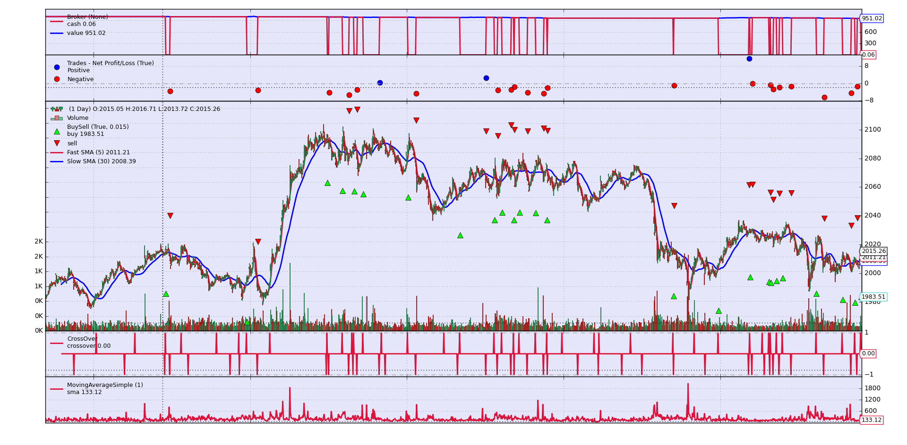
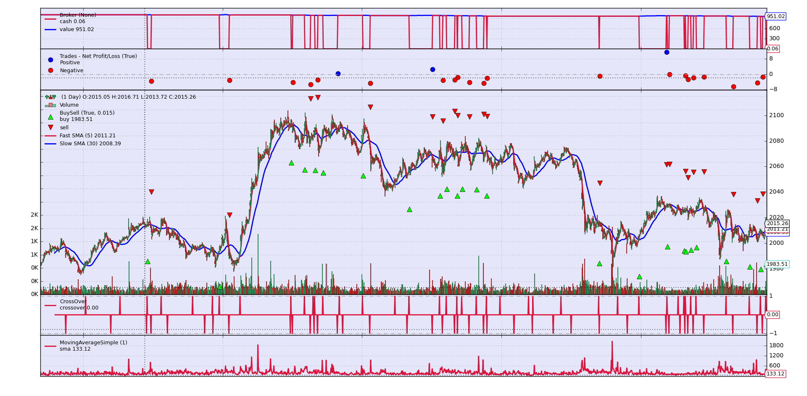

Фреймворк для алгоритмической торговли
Фреймворк для алгоритмической торговли — это универсальный инструмент для создания, тестирования и автоматизации торговых стратегий на финансовых рынках. Проект реализован в рамках учебной практики.
В проектной практике каждый участник внёс значимый вклад, используя свои ключевые навыки и опыт. Ниже представлены основные компетенции и направления работы каждого участника:


 
